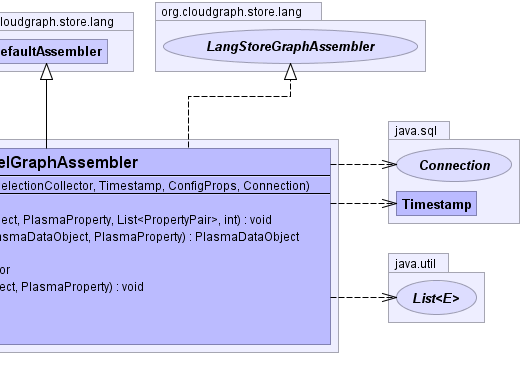

- java.lang.Object
-
- org.cloudgraph.store.lang.AssemblerSupport
-
- org.cloudgraph.store.lang.DefaultAssembler
-
- org.cloudgraph.rdb.graph.ParallelGraphAssembler
-
- All Implemented Interfaces:
- LangStoreGraphAssembler
public class ParallelGraphAssembler extends DefaultAssembler implements LangStoreGraphAssembler
Constructs a data graph in parallel starting with a given root SDO type based on a given "selection graph", where processing proceeds as a breadth-first traversal and tasks/threads are dynamically added based on availability within a shared thread pool.While the result graph may be of any arbitrary size or depth, because the traversal is breadth-first, many tasks are typically spawned at the "base" of the graph, exhausting the available pool threads. Each subgraph task can spawn further sub tasks based on thread availability, but typically this means each task will traverse and process a healthy segment of the total graph. Since the actual size or depth of the result graph is not known until discovered on traversal, a fixed number of parallel tasks cannot be initially created, but must be dynamically spawned during graph discovery.
The assembly is triggered by calling the
GraphAssembler#assemble(Listmethod which initializes the graph root and begins a breadth first traversal of the selection graph as represented in the underlying data store.results) Various metrics for the assembly are collected using
GraphMetricVisitorand are available as SDO instance properties.- Since:
- 0.6.2
- Author:
- Scott Cinnamond
- See Also:
org.plasma.query.collector.Selection,ParallelSubgraphTask,GraphMetricVisitor-


-
-
Field Summary
-
Fields inherited from class org.cloudgraph.store.lang.DefaultAssembler
dataObjectMap, EMPTY_DATA_OBJECT_LIST, EMPTY_PROPERTY_SET, nameComparator, root, rootType, snapshotDate
-
Fields inherited from class org.cloudgraph.store.lang.AssemblerSupport
collector, statementExecutor, statementFactory
-
-
Constructor Summary
Constructors Constructor and Description ParallelGraphAssembler(PlasmaType rootType, SelectionCollector collector, java.sql.Timestamp snapshotDate, ConfigProps config, java.sql.Connection con)Constructor.
-
Method Summary
Methods Modifier and Type Method and Description voidassemble(java.util.List<PropertyPair> results)Recursively re-constitutes a data graph distributed across multiple tables and/or rows, starting with the given result row.protected voidassemble(PlasmaType targetType, PlasmaDataObject source, PlasmaProperty sourceProperty, java.util.List<PropertyPair> childKeyPairs, int level)Assembles a data object of the given target type by first forming a query using the given key/property pairs.protected PlasmaDataObjectcreateDataObject(java.util.List<PropertyPair> row, PlasmaDataObject source, PlasmaProperty sourceProperty)Creates a new data object contained by the given source data object and source property.ConfigPropsgetConfig()java.util.concurrent.ThreadPoolExecutorgetExecutorService()protected voidlink(PlasmaDataObject target, PlasmaDataObject source, PlasmaProperty sourceProperty)Creates a directed (link) between the given source and target data objects.voidlogPoolStatistics()intnumThreadsAvailable()booleanthreadsAvailable()-
Methods inherited from class org.cloudgraph.store.lang.DefaultAssembler
clear, collectResults, createHashKey, findDataObject, getDataGraph, initRoot
-
Methods inherited from class org.cloudgraph.store.lang.AssemblerSupport
findNextKeyValue, getChildKeyPairs, getChildKeyPairs, getChildKeyProps, getNextKeyPairs, getPredicateResult, getStatementExecutor, getStatementFactory, throwPriKeyError
-
-
-
-
Constructor Detail
-
ParallelGraphAssembler
public ParallelGraphAssembler(PlasmaType rootType, SelectionCollector collector, java.sql.Timestamp snapshotDate, ConfigProps config, java.sql.Connection con)Constructor.- Parameters:
rootType- the SDO root type for the result data graphcollector- selected SDO properties. Properties are mapped by selected types required in the result graph.snapshotDate- the query snapshot date which is populated into every data object in the result data graph.minPoolSize- the minimum or core size of the underlying thread pool used for all tasks executed under this assemblermaxPoolSize- the maximum size of the underlying thread pool used for all tasks executed under this assemblercon-
-
-
Method Detail
-
getExecutorService
public java.util.concurrent.ThreadPoolExecutor getExecutorService()
-
getConfig
public ConfigProps getConfig()
-
link
protected void link(PlasmaDataObject target, PlasmaDataObject source, PlasmaProperty sourceProperty)Description copied from class:DefaultAssemblerCreates a directed (link) between the given source and target data objects. The reference is created as a containment reference only if the given target has no container.- Overrides:
linkin classDefaultAssembler- Parameters:
target- the data object which is the targetsource- the source data objectsourceProperty- the source property- See Also:
TraversalDirection
-
createDataObject
protected PlasmaDataObject createDataObject(java.util.List<PropertyPair> row, PlasmaDataObject source, PlasmaProperty sourceProperty)Description copied from class:DefaultAssemblerCreates a new data object contained by the given source data object and source property.- Overrides:
createDataObjectin classDefaultAssembler- Parameters:
row- the results rowsource- the source data objectsourceProperty- the source containment property- Returns:
- the new data object
-
assemble
public void assemble(java.util.List<PropertyPair> results)
Recursively re-constitutes a data graph distributed across multiple tables and/or rows, starting with the given result row.To retrieve the graph use
DefaultAssembler.getDataGraph().- Specified by:
assemblein interfaceLangStoreGraphAssembler- Specified by:
assemblein classDefaultAssembler- Parameters:
results- the result row.- See Also:
DataGraphAssembler.getDataGraph()
-
assemble
protected void assemble(PlasmaType targetType, PlasmaDataObject source, PlasmaProperty sourceProperty, java.util.List<PropertyPair> childKeyPairs, int level)Description copied from class:DefaultAssemblerAssembles a data object of the given target type by first forming a query using the given key/property pairs. If an existing data object is mapped for the given key pairs, the existing data object is linked.- Specified by:
assemblein classDefaultAssembler- Parameters:
targetType- the type for the data object to be assembledsource- the source data objectsourceProperty- the source propertychildKeyPairs- the key pairs for the data object to be assembled
-
logPoolStatistics
public void logPoolStatistics()
-
threadsAvailable
public boolean threadsAvailable()
-
numThreadsAvailable
public int numThreadsAvailable()
-
-